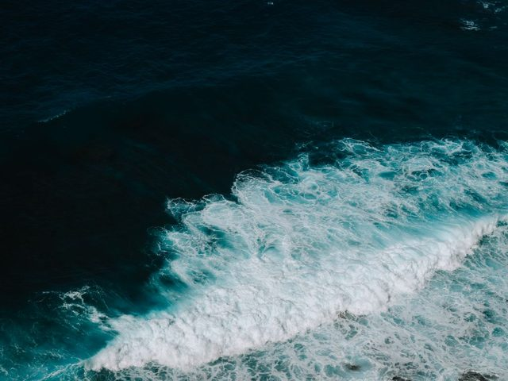
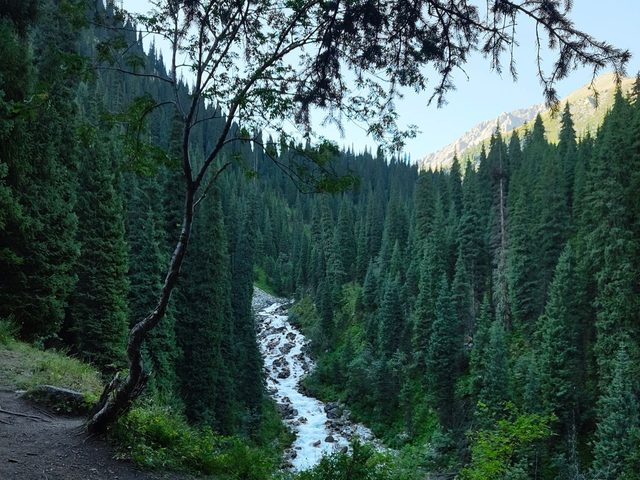
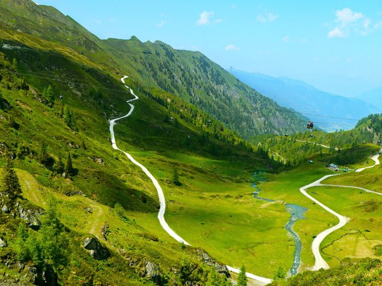

UNIT 25 · VOCABULARY
地理名詞
Geographical terms
9 個單字聽・唸・用
本單元單字一覽
海岸、沙漠、森林、海洋、平原、溪流、山谷、樹林和環境，共 9 個。注意 desert（沙漠）和 dessert（甜點）。
coastdesertenvironmentforestoceanplainstreamvalleywoods
每個字都有 🔊，先聽發音、跟著唸，再看例句。
單字 1–4

coast
海岸；海濱n.
We drove along the east coast of Taiwan.
我們沿著台灣東海岸開車。
我們沿著台灣東海岸開車。
desert
沙漠n.
Camels can walk in the desert for days.
駱駝可以在沙漠走好幾天。
駱駝可以在沙漠走好幾天。

environment
環境n.
We should protect the environment.
我們應該保護環境。
我們應該保護環境。

forest
森林n.
Many animals live in the forest.
很多動物住在森林裡。
很多動物住在森林裡。
單字 5–8

ocean
海洋n.
Whales live in the ocean.
鯨魚住在海洋裡。
鯨魚住在海洋裡。

plain
平原；樸素的；簡單的n. / adj.
Rice grows well on the wide plain.
稻米在廣大的平原上長得很好。
稻米在廣大的平原上長得很好。

stream
小溪；溪流n.
We caught small fish in the stream.
我們在小溪裡抓小魚。
我們在小溪裡抓小魚。

valley
山谷n.
A small village sits in the valley.
一個小村莊座落在山谷中。
一個小村莊座落在山谷中。
單字 9–9

woods
樹林n.
We took a walk in the woods.
我們在樹林裡散步。
我們在樹林裡散步。
大小比一比
| 大 | 小 |
|---|---|
| ocean 海洋 | sea 海 |
| river 河 | stream 小溪 |
| forest 森林 | woods 樹林 |
desert 沙漠（一個 s）↔ dessert 甜點（兩個 s，甜點吃兩份）。
快問快答：中文 → 英文
1海岸；海濱coast
2沙漠desert
3環境environment
4森林forest
5海洋ocean
6平原；樸素的；簡單的plain
7小溪；溪流stream
8山谷valley
快問快答：英文 → 中文
1woods樹林
學完了！接下來
複習方法
review
- 回到「📗 單字卡」，按「遮中文」自己考自己
- 再按「遮英文」，看中文說出英文
- 每個例句跟著 🔊 唸一次
準備好了
- 按右上角「📝 前往測驗」
- 測驗錯的題目要訂正到全對
- 訂正完成補送 1 點